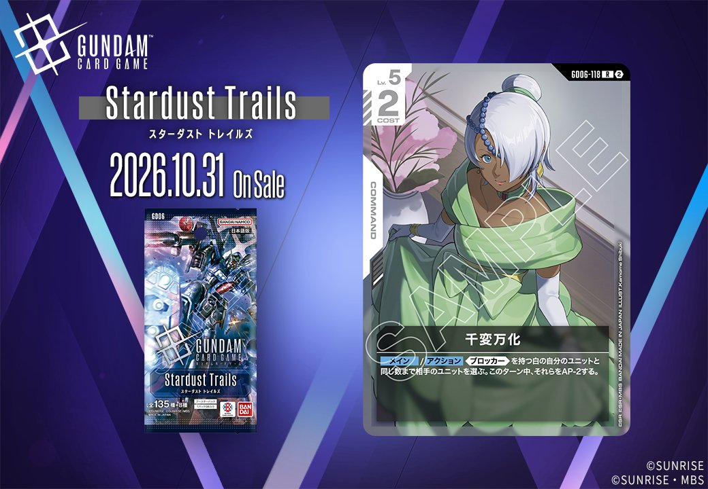
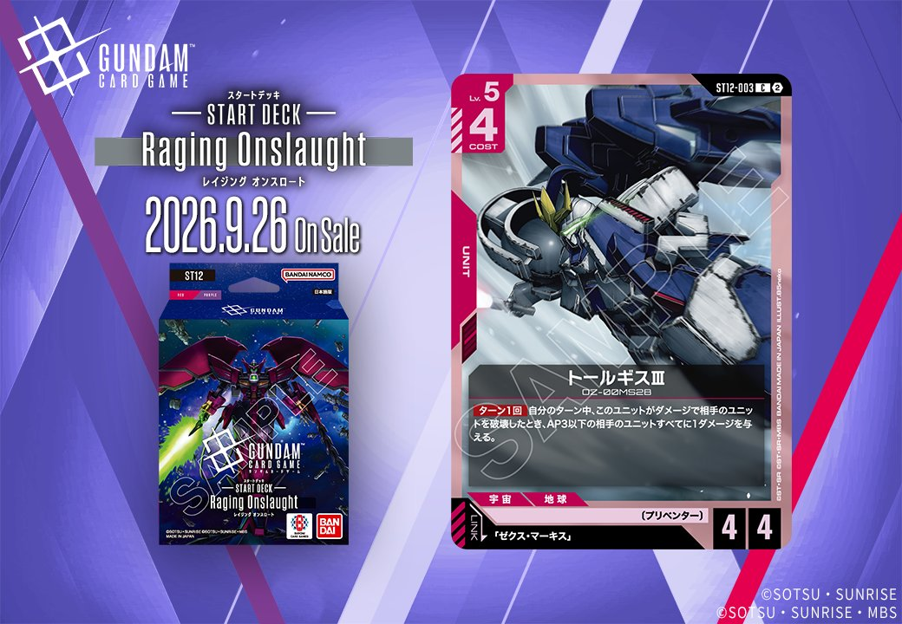

今回は、Stardust Trails(GD06)より白のCOMMAND「千変万化」(GD06-118／発売2026-10-31)と、ST12より赤のUNIT「トールギスⅢ」(ST12-003／発売2026-09-26)の2枚を紹介します。トールギスⅢは「ゼクス・マーキス」とのリンクを持つカードです。

千変万化 (GD06-118)
| 色 | 白 | タイプ | COMMAND |
| Lv | 5 | コスト | 2 |
効果: メイン/アクション 《ブロッカー》を持つ白の自分のユニットと同じ数まで相手のユニットを選ぶ。このターン中、それらをAP-2する。
千変万化(GD06-118)は、《ブロッカー》を持つ白の自分のユニットと同じ数まで相手ユニットを選び、そのターン中AP-2する白のコマンド。COST2で複数対象を狙える点が特徴だが、《ブロッカー》ユニットの展開数が発動の前提となるため、リック・ディアスやガンダム・ルブリス、エールストライクガンダムといった《ブロッカー》持ちを並べる構築が下地になる。 AP-2はキラ・ヤマトの【アタック時】と効果の方向性が近く、相手の攻撃力を削ぐ用途に向くが、AP減少のみで破壊や除去は行わない点に注意が必要。2026-10-31発売。

トールギスⅢ (ST12-003)
| 色 | 赤 | タイプ | UNIT |
| Lv | 5 | コスト | 4 |
| AP | 4 | HP | 4 |
| 特徴 | 〔プリベンター〕 | ||
| リンク条件 | 「ゼクス・マーキス」 | ||
効果: ターン1回 自分のターン中、このユニットがダメージで相手のユニットを破壊したとき、AP3以下の相手のユニットすべてに1ダメージを与える。
トールギスⅢ（ST12-003）は、COST4でAP4/HP4という標準的なステータスに、自分のターン中に相手ユニットをダメージで破壊した際、AP3以下の相手ユニットすべてに1ダメージを与えるターン1回効果を持つ赤のユニットです。相手の小型ユニットを面で削れるため、AP4での戦闘破壊を起点に盤面を広く処理できる点が特徴です。 「ゼクス・マーキス」とのリンクを持ち、〔プリベンター〕特徴を軸にした構築で運用が想定されます。2026年9月26日発売のST12収録カードです。


関連カード
-
 溢れる慈愛(GD01-118)白系デッキ内採用率38.6% (1713デッキ)
溢れる慈愛(GD01-118)白系デッキ内採用率38.6% (1713デッキ) -
 ガンダム・ルブリス(GD01-086)白系デッキ内採用率33.7% (1497デッキ)
ガンダム・ルブリス(GD01-086)白系デッキ内採用率33.7% (1497デッキ) -
 エールストライクガンダム(ST04-001)白系デッキ内採用率31.8% (1411デッキ)
エールストライクガンダム(ST04-001)白系デッキ内採用率31.8% (1411デッキ) -
 キラ・ヤマト(ST04-010)白系デッキ内採用率31.5% (1398デッキ)
キラ・ヤマト(ST04-010)白系デッキ内採用率31.5% (1398デッキ) -
 リック・ディアス(GD02-079)白系デッキ内採用率27.2% (1205デッキ)
リック・ディアス(GD02-079)白系デッキ内採用率27.2% (1205デッキ) -
 格闘戦(ST03-013)赤系デッキ内採用率22.7% (1009デッキ)
格闘戦(ST03-013)赤系デッキ内採用率22.7% (1009デッキ) -
 GQuuuuuuX（オメガ・サイコミュ起動時）(GD03-034)赤系デッキ内採用率17.5% (778デッキ)
GQuuuuuuX（オメガ・サイコミュ起動時）(GD03-034)赤系デッキ内採用率17.5% (778デッキ) -
 資源衛星パラオ(GD01-128)赤系デッキ内採用率14.3% (633デッキ)
資源衛星パラオ(GD01-128)赤系デッキ内採用率14.3% (633デッキ) -
 戦技の向上(GD03-109)赤系デッキ内採用率13.5% (597デッキ)
戦技の向上(GD03-109)赤系デッキ内採用率13.5% (597デッキ) -
 GFreD(GD03-035)赤系デッキ内採用率11.4% (507デッキ)
GFreD(GD03-035)赤系デッキ内採用率11.4% (507デッキ)